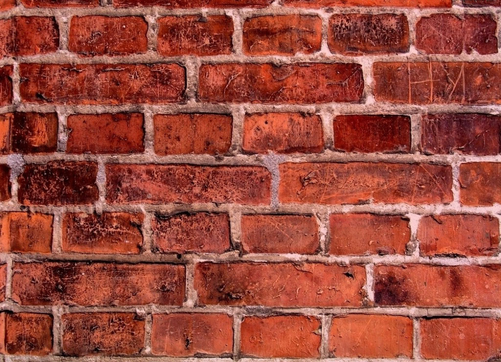
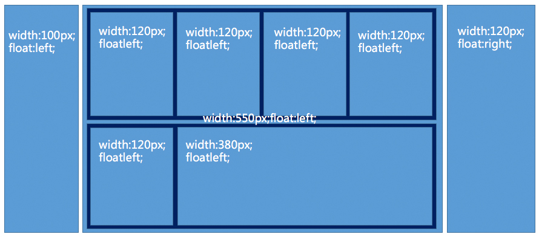

元素block块状化（砖头化）；

浮动与display:block化
破坏性造成的紧密排列特性（去空格化）；

float浮动去空格
浮动（砌砖）布局的问题：
容错性比较糟糕，容易出问题（墙上砸个窟窿，切好的墙就会倒掉）；
元素尺寸固定，很难重复使用（模块到另外一个尺寸容器中，不配对，要重新整，完全没有重用性）；
在低版本IE下的问题很多，只教你欲哭无泪。
浮动原本设计就是文字环绕，应用于流体布局的，因此，要想让浮动熠熠生辉，还是要融入到流体布局中。